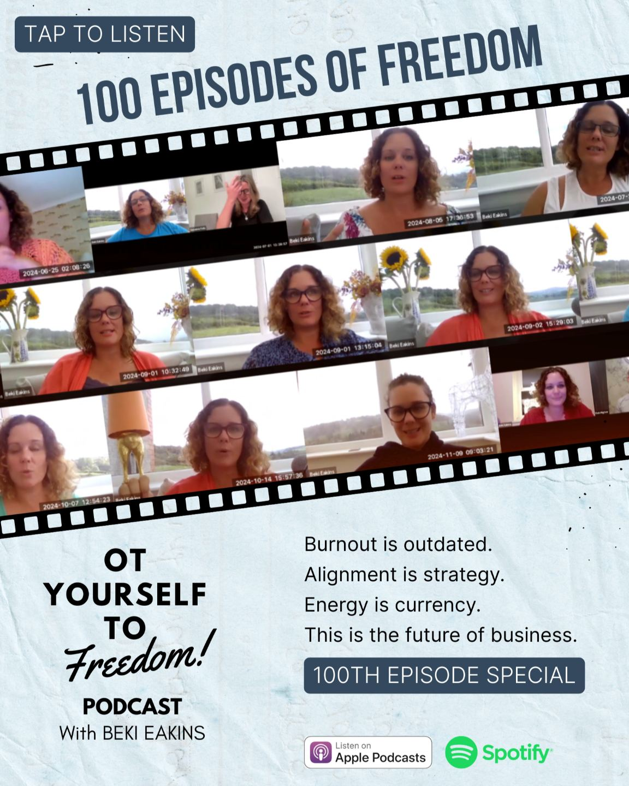

OT Yourself to Freedom
The podcast for OTs who want more time, more income and a life they choose. Beki and her guests share how they built the way out.
Featured episodes

Starting Your Online OT Business
Featuring Beki Eakins (Repost from The OT Lifestyle Movement)
Listen to episode 147
From Blood Pressure Meds to Closing His Clinic
How OT Ivan Hardcastle Built a Freedom Business in 2 Years
Listen to episode 133
Why OTs Are Perfectly Positioned
To Lead the Somatic Nervous System Revolution, with Sarita
Listen to episode 139
From Baker to OT to Business Owner
How Brad Williams Created a Driving Programme for Neurodivergent Learners
Listen to episode 106
The OT Path to Freedom
Burnout Recovery, Alignment & Farm OT with Alex Viera
Listen to episode 114
What a 12-Hour Work Week Looks Like
How I Designed My Freedom Life as a Former OT
Listen to episode 130100 episodes in
What Beki has learned helping OTs build online businesses, in one episode.

Enjoying the podcast? Let's talk.
If you want to create an online business and wish to discuss how we can support you, book in with our team.